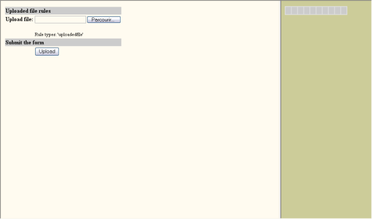

examples
examples$Date$
 Introduction
IntroductionThis example requires :
This example allows you to upload files from a web browser to a ftp server (may be different and on another host that your web server).
PEAR::HTML_QuickForm package is used to make and manage the form that will send file to your web server (left frame), while HTML_Progress is only used to display a horizontal progress meter running in indeterminate mode (right frame).
Be aware that your web server could returns a timeout on long upload operation, by running the HTML_Progress script (See technical notes below).
[Top]
The script time-out refers to the number of seconds a PHP page is given before the script is assumed to have failed and the page terminated. If you are uploading a large file the script that is receiving the transfer may time out before the file has been completely uploaded. To alter this setting you should insert the following code into your uploading page prior to creating any HTML_Progress and HTML_QuickForm objects.
| 1 | set_time_limit(300); // five minutes |
See also: set_time_limit manual.
[Top]
 Render options
Render options increment = 10 (to make progress bar animation smoothest in indeterminate mode)
speed = 100 (to make progress bar animation smoothest)
background-color = #e0e0e0
color = #996 background-color = #CCCC99
active-color = #996
[Top]
 Output
Output
[Top]
 PHP source syntax highlight
PHP source syntax highlightThe form file selection: Open source listing in a new window.
The progress meter in indeterminate mode: Open source listing in a new window.
[Top]
 Play demo
Play demoRun the script.
[Top]